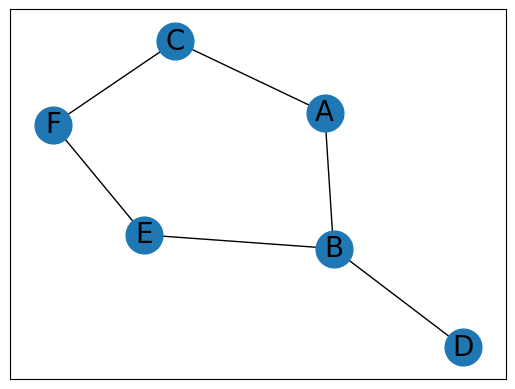
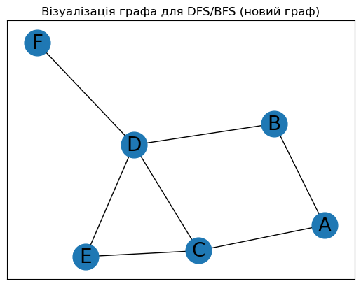

class Vertex:
def __init__(self, key):
# Конструктор класу Vertex
self.id = key # Ідентифікатор вершини
self.connectedTo = {} # Словник суміжних вершин і ваг
def addNeighbor(self, nbr, weight=0):
# Додає з'єднання між поточною вершиною та сусідньою із заданою вагою
self.connectedTo[nbr] = weight
def __str__(self):
# Повертає рядкове представлення вершини
return str(self.id) + ' connectedTo: ' + str([x.id for x in self.connectedTo])
def getConnections(self):
# Повертає список суміжних вершин
return self.connectedTo.keys()
def getId(self):
# Повертає ідентифікатор вершини
return self.id
def getWeight(self, nbr):
# Повертає вагу ребра між поточною вершиною та сусідньою
return self.connectedTo[nbr]Лабораторна робота №8
Тема: Структура даних граф. Алгоритми на графах
Виконала: Бояринцова Поліна
Група: КН-24-1
Дата: 16.05.2025
1. Реалізація прикладів
1.1. Приклад реалізації структури даних граф
1.2. Клас 𝐺𝑟𝑎𝑝ℎ
class Graph:
def __init__(self):
# Ініціалізація порожнього словника, що відображає імена вершин на об'єкти Vertex.
self.vertList = {}
# Ініціалізація лічильника вершин у графі.
self.numVertices = 0
def addVertex(self, key):
# Збільшення лічильника вершин та створення нового об'єкта Vertex.
self.numVertices += 1
newVertex = Vertex(key)
# Додавання нової вершини до словника.
self.vertList[key] = newVertex
return newVertex
def getVertex(self,n):
# Повертає об'єкт Vertex за його ім'ям.
if n in self.vertList:
return self.vertList[n]
else:
return None
def __contains__(self, n):
# Перевіряє, чи міститься вершина з заданим ім'ям у графі.
return n in self.vertList
def addEdge(self,f,t,cost=0):
# Додає зв'язок між вершинами з іменами f та t з вагою cost (за замовчуванням – 0).
if f not in self.vertList:
# Якщо вершини f ще немає у графі, додаємо її.
nv = self.addVertex(f)
if t not in self.vertList:
# Якщо вершини t ще немає у графі, додаємо її.
nv = self.addVertex(t)
# Додаємо зв'язок між вершинами f та t з вагою cost.
self.vertList[f].addNeighbor(self.vertList[t], cost)
def getVertices(self):
# Повертає список імен усіх вершин у графі.
return self.vertList.keys()
def __iter__(self):
# Повертає ітератор по об'єктах типу Vertex.
return iter(self.vertList.values())1.3. Алгоритм Дейкстри
import networkx as nx
# Створюємо граф G (шляховий граф з 5 вершинами)
G = nx.path_graph(5)
# Знаходимо найкоротший шлях від вершини 0 до всіх інших вершин та їх довжини
length, path = nx.single_source_dijkstra(G, 0)
# Виводимо довжину найкоротшого шляху від вершини 0 до вершини 4
print(length[4])
# Виводимо всі довжини найкоротших шляхів від вершини 0 до всіх інших вершин
print(length)
# Знаходимо найкоротший шлях від вершини 1 до всіх інших вершин та їх довжини
nx.single_source_dijkstra(G, source=1) 4
{0: 0, 1: 1, 2: 2, 3: 3, 4: 4}({1: 0, 0: 1, 2: 1, 3: 2, 4: 3},
{1: [1], 0: [1, 0], 2: [1, 2], 3: [1, 2, 3], 4: [1, 2, 3, 4]})1.4. Алгоритм Беллмана-Форда
import networkx as nx
# Створюємо граф G (шляховий граф з 5 вершинами)
G = nx.path_graph(5)
# Знаходимо найкоротший шлях від вершини 0 до всіх інших вершин та їх довжини
length = nx.single_source_bellman_ford_path_length(G, 0)
# Виводимо довжину найкоротшого шляху від вершини 0 до вершини 4
print(length[4])
# Виводимо всі довжини найкоротших шляхів від вершини 0 до всіх інших вершин
print(length)
# Знаходимо найкоротший шлях від вершини 1 до всіх інших вершин та їх довжини
nx.single_source_bellman_ford_path_length(G, source=1) 4
{0: 0, 1: 1, 2: 2, 3: 3, 4: 4}{1: 0, 0: 1, 2: 1, 3: 2, 4: 3}1.5. Візуалізація графа
# Виклик magic-команди, яка автоматично відображає графіки у рядку
%matplotlib inline
# Імпорт необхідних бібліотек
import networkx as nx
import matplotlib.pyplot as plt
# Створення пустого графа
G = nx.Graph()
# Додавання вершин та ребер
G.add_nodes_from(['A', 'B', 'C', 'D', 'E', 'F'])
G.add_edges_from([('A', 'B'), ('A', 'C'), ('B', 'D'),
('B', 'E'), ('C', 'F'), ('E', 'F')])
# Визначення позицій вершин для відображення графа
pos = nx.spring_layout(G)
# Візуалізація вершин та їх міток
nx.draw_networkx_nodes(G, pos, node_size=700)
nx.draw_networkx_labels(G, pos, font_size=20, font_family='sans-serif')
# Візуалізація ребер
nx.draw_networkx_edges(G, pos, edgelist=G.edges())
# Показ графіка
plt.show()
1.6. Алгоритм пошуку в глибину (DFS)
import networkx as nx
# Створення графа
G = nx.Graph()
G.add_nodes_from(['A', 'B', 'C', 'D', 'E', 'F'])
G.add_edges_from([('A', 'B'), ('A', 'C'), ('B', 'D'),
('B', 'E'), ('C', 'F'), ('E', 'F')])
# DFS — обхід у глибину, повертає всі досяжні вершини з даної
def dfs(graph, start, visited=None):
if visited is None:
visited = set() # Створюємо пустий набір для збереження відвіданих вершин
visited.add(start) # Додаємо поточну вершину до відвіданих
# Перебираємо всі суміжні вершини, які ще не були відвідані
for next in set(graph.adj[start].keys()) - visited:
dfs(graph, next, visited) # Рекурсивний виклик
return visited
# Виклик DFS з вершини 'C'
print(dfs(G, 'C')){'A', 'F', 'C', 'E', 'B', 'D'}# Функція dfs_paths також використовує алгоритм пошуку в глибину (DFS),
# але вона знаходить всі можливі шляхи з початкової вершини до цільової вершини.
# Параметр path використовується для зберігання поточного шляху.
def dfs_paths(graph, start, goal, path=None):
if path is None:
path = [start] # Починаємо шлях з початкової вершини
if start == goal:
yield path # Досягли мети — повертаємо шлях
# Перебираємо всі сусідні вершини поточної вершини, які ще не відвідані
for next in set(graph.adj[start].keys()) - set(path):
yield from dfs_paths(graph, next, goal, path + [next]) # Рекурсія з оновленим шляхом
# Викликаємо функцію dfs_paths з графом G, початковою вершиною 'C' та цільовою вершиною 'F'
print(list(dfs_paths(G, 'C', 'F')))[['C', 'A', 'B', 'E', 'F'], ['C', 'F']]1.7. Пошук у ширину (breadth-first search, BFS)
def bfs_paths(graph, start, goal):
# Створення черги з початковою вершиною та її шляхом
queue = [(start, [start])]
# Поки черга не порожня
while queue:
# Вибір вершини та її шляху з початка черги
(vertex, path) = queue.pop(0)
# Для кожної сусідньої вершини
for next in set(graph.adj[vertex].keys()) - set(path):
# Якщо сусідня вершина є цільовою
if next == goal:
# Повернення шляху, якщо досягнуто цільову вершину
yield path + [next]
else:
# Додавання сусідньої вершини та нового шляху в чергу
queue.append((next, path + [next]))
# Виведення усіх шляхів від вершини 'A' до вершини 'F' за допомогою пошуку в ширину
list(bfs_paths(G, 'A', 'F')) [['A', 'C', 'F'], ['A', 'B', 'E', 'F']]2. Виконання завдання
2.1. Алгоритм Дейкстри
import networkx as nx
# Створюємо граф з новою структурою
G = nx.DiGraph()
G.add_edge('A', 'B', weight=3)
G.add_edge('A', 'C', weight=1)
G.add_edge('B', 'D', weight=2)
G.add_edge('C', 'D', weight=4)
G.add_edge('C', 'E', weight=2)
G.add_edge('E', 'D', weight=1)
G.add_edge('D', 'F', weight=5)
# Знаходимо найкоротший шлях від 'A' до всіх інших
length, path = nx.single_source_dijkstra(G, 'A')
# Виводимо довжину найкоротшого шляху від 'A' до 'F'
print("Довжина найкоротшого шляху від A до F:", length['F'])
# Виводимо всі довжини найкоротших шляхів
print("Довжини до всіх вершин:", length)Довжина найкоротшого шляху від A до F: 9
Довжини до всіх вершин: {'A': 0, 'C': 1, 'B': 3, 'E': 3, 'D': 4, 'F': 9}2.2. Алгоритм Беллмана-Форда
import networkx as nx
# Створюємо граф з новими вершинами та вагами
G = nx.DiGraph()
G.add_edge('A', 'B', weight=3)
G.add_edge('A', 'C', weight=1)
G.add_edge('B', 'D', weight=2)
G.add_edge('C', 'D', weight=4)
G.add_edge('C', 'E', weight=2)
G.add_edge('E', 'D', weight=1)
G.add_edge('D', 'F', weight=5)
# Обчислюємо довжини найкоротших шляхів від вершини 'A'
length = nx.single_source_bellman_ford_path_length(G, 'A')
# Виводимо довжину найкоротшого шляху від 'A' до 'F'
print("Довжина найкоротшого шляху від A до F (Беллман-Форд):", length['F'])
# Виводимо всі довжини
print("Довжини до всіх вершин (Беллман-Форд):", length)Довжина найкоротшого шляху від A до F (Беллман-Форд): 9
Довжини до всіх вершин (Беллман-Форд): {'A': 0, 'B': 3, 'C': 1, 'D': 4, 'E': 3, 'F': 9}Побудова графа для DFS/BFS
%matplotlib inline
import networkx as nx
import matplotlib.pyplot as plt
# Створюємо граф без напрямків (для DFS/BFS)
G = nx.Graph()
# Додаємо нові вершини та ребра
G.add_nodes_from(['A', 'B', 'C', 'D', 'E', 'F'])
G.add_edges_from([('A', 'B'), ('A', 'C'), ('B', 'D'),
('C', 'D'), ('C', 'E'), ('E', 'D'), ('D', 'F')])
# Побудова графіка
pos = nx.spring_layout(G)
nx.draw_networkx_nodes(G, pos, node_size=700)
nx.draw_networkx_labels(G, pos, font_size=20)
# Візуалізація ребер
nx.draw_networkx_edges(G, pos)
plt.title("Візуалізація графа для DFS/BFS (новий граф)")
plt.show()
2.3.1. DFS (обхід у глибину)
def dfs(graph, start, visited=None):
if visited is None:
visited = set()
visited.add(start)
for next in set(graph.adj[start].keys()) - visited:
dfs(graph, next, visited)
return visited
# Запуск DFS з вершини 'A'
visited_nodes = dfs(G, 'A')
print("Вершини, відвідані за DFS:", visited_nodes)Вершини, відвідані за DFS: {'B', 'D', 'C', 'E', 'F', 'A'}2.3.2. DFS: пошук усіх шляхів від A до F
def dfs_paths(graph, start, goal, path=None):
if path is None:
path = [start]
if start == goal:
yield path
for next in set(graph.adj[start].keys()) - set(path):
yield from dfs_paths(graph, next, goal, path + [next])
# Знаходження всіх шляхів з 'A' до 'F'
all_paths = list(dfs_paths(G, 'A', 'F'))
print("Всі шляхи з A до F (DFS):", all_paths)Всі шляхи з A до F (DFS): [['A', 'B', 'D', 'F'], ['A', 'C', 'E', 'D', 'F'], ['A', 'C', 'D', 'F']]2.4. BFS: пошук усіх шляхів від A до F
def bfs_paths(graph, start, goal):
queue = [(start, [start])]
while queue:
(vertex, path) = queue.pop(0)
for next in set(graph.adj[vertex].keys()) - set(path):
if next == goal:
yield path + [next]
else:
queue.append((next, path + [next]))
# Знаходження всіх шляхів з 'A' до 'F' за BFS
bfs_result = list(bfs_paths(G, 'A', 'F'))
print("Всі шляхи з A до F (BFS):", bfs_result)Всі шляхи з A до F (BFS): [['A', 'B', 'D', 'F'], ['A', 'C', 'D', 'F'], ['A', 'C', 'E', 'D', 'F']]3. Контрольні питання
1. Що таке граф у термінах теорії графів? Наведіть приклади реальних ситуацій, де можна застосовувати графи.
Граф — це математична структура, яка складається з множини вершин (або вузлів) та множини ребер (або дуг), які з’єднують пари вершин. Граф може бути орієнтованим (ребра мають напрямок) або неорієнтованим (ребра не мають напрямку). Приклади застосування графів:
- Мережі доріг та транспортні маршрути (вершини — перехрестя, ребра — дороги);
- Соціальні мережі (вершини — користувачі, ребра — дружба або підписка);
- Мережі комунікацій (комп’ютери як вершини, канали зв’язку — ребра);
- Задачі планування і оптимізації, наприклад, найкоротший шлях.
2. Які основні види графів існують? Наведіть відмінності між орієнтованими і неорієнтованими графами.
Основні види графів:
- Неорієнтований граф — ребра не мають напрямку, зв’язок між вершинами двонаправлений.
- Орієнтований граф (орграф) — ребра мають напрямок від однієї вершини до іншої.
- Зважений граф — кожне ребро має вагу (вартість).
- Незважений граф — ребра без ваг.
- Простий граф — без петель і кратних ребер.
- Мультиграф — допускає кратні ребра між одними й тими ж вершинами.
- Циклічний та ациклічний граф — залежно від наявності циклів.
3. Як можна представити граф у пам’яті комп’ютера? Опишіть структури даних, які використовуються для зберігання графів.
Основні структури даних для зберігання графів:
- Матриця суміжності: Двовимірний масив розміру |V|×|V|, де |V| — кількість вершин. Елемент matrix[i][j] дорівнює 1 (або вазі ребра), якщо існує ребро з вершини i в вершину j, і 0 — інакше. Переваги: швидкий доступ для перевірки наявності ребра. Недоліки: велика пам’ять для розріджених графів.
- Список суміжності: Для кожної вершини зберігається список її сусідів (вершин, з якими вона з’єднана ребром). Переваги: ефективне збереження розріджених графів, економія пам’яті. Недоліки: повільніший доступ для перевірки конкретного ребра.
- Список ребер: Масив або список, де зберігаються всі ребра графа як пари (або трійки для зважених) вершин.
4. Як працює алгоритм пошуку в ширину (BFS) на графах? Наведіть приклади ситуацій, де застосовується цей алгоритм.
- Алгоритм BFS: Починається з початкової вершини. Використовує чергу для послідовного обходу сусідніх вершин по рівнях: спочатку всі вершини на відстані 1, потім 2 і т.д. Відвідує вершини рівень за рівнем, гарантуючи, що найкоротший шлях (в термінах кількості ребер) до будь-якої вершини буде знайдений.
- Приклади застосування BFS: Пошук найкоротшого шляху в невагомому графі. Перевірка зв’язності графа. Пошук у лабіринтах. Розподіл ресурсів у мережах.
5. Що таке алгоритм пошуку в глибину (DFS) на графах? Як він відрізняється від BFS? Дайте приклади задач, де використовується DFS.
- Алгоритм DFS: Рекурсивний або з використанням стеку метод обходу графа. Глибоко заходить у граф, рухаючись від поточної вершини до сусіда, доки можна. Потім повертається назад, щоб дослідити інші гілки.
- Відмінність від BFS: DFS заходить «вглиб» однієї гілки, BFS — обходить рівнями. DFS може використовуватися для перевірки циклів, топологічного сортування, пошуку компонент зв’язності. BFS гарантовано знайде найкоротший шлях у невагомому графі, DFS — ні.
- Приклади задач для DFS: Знаходження всіх шляхів між двома вершинами. Перевірка ациклічності графа. Топологічне сортування. Пошук сильнозв’язних компонент.
6. Опишіть алгоритм Дейкстри для пошуку найкоротшого шляху в графі. Які умови повинні виконуватися для успішної роботи цього алгоритму?
- Алгоритм Дейкстри: Починається з початкової вершини, встановлює відстані до всіх інших вершин як нескінченність, окрім початкової (0). Вибирає вершину з найменшою відомою відстанню, оновлює відстані до її сусідів, якщо вони можуть бути покращені через неї. Повторює процес, доки всі вершини не будуть оброблені.
- Умови для роботи алгоритму: Граф має бути зваженим з невід’ємними вагами ребер (ваги ≥ 0). Якщо є негативні ребра — алгоритм Дейкстри може дати некоректний результат.